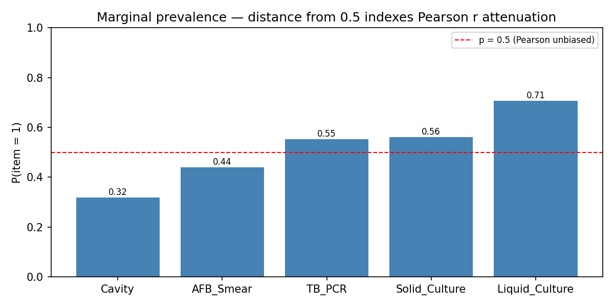
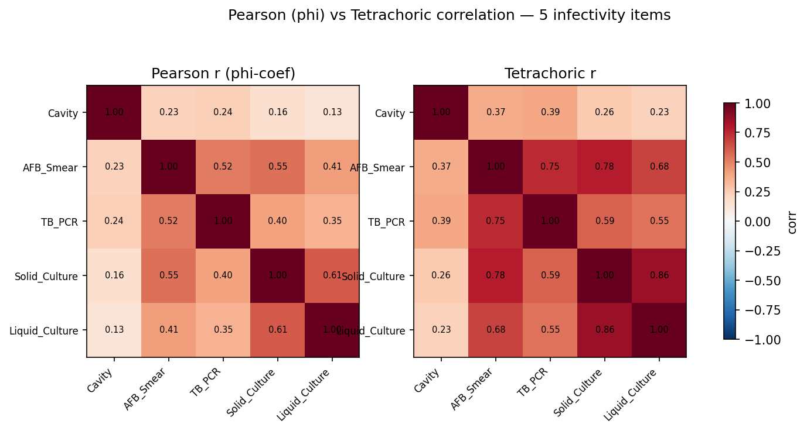
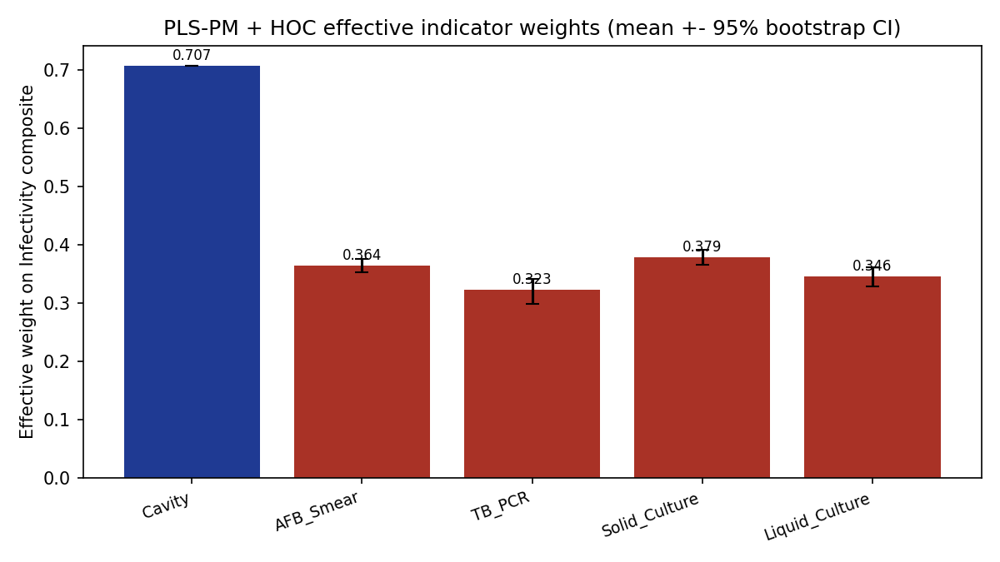
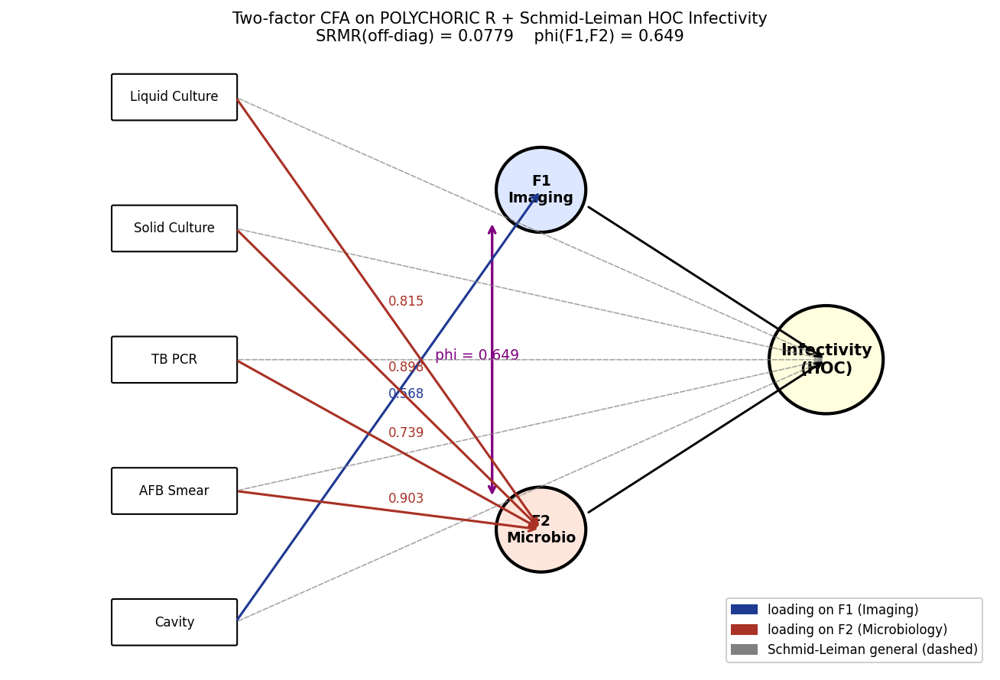
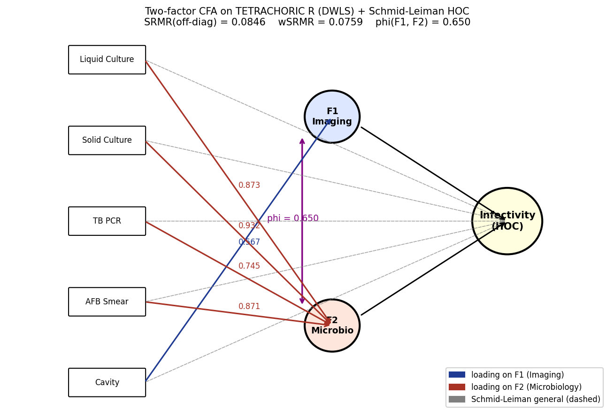
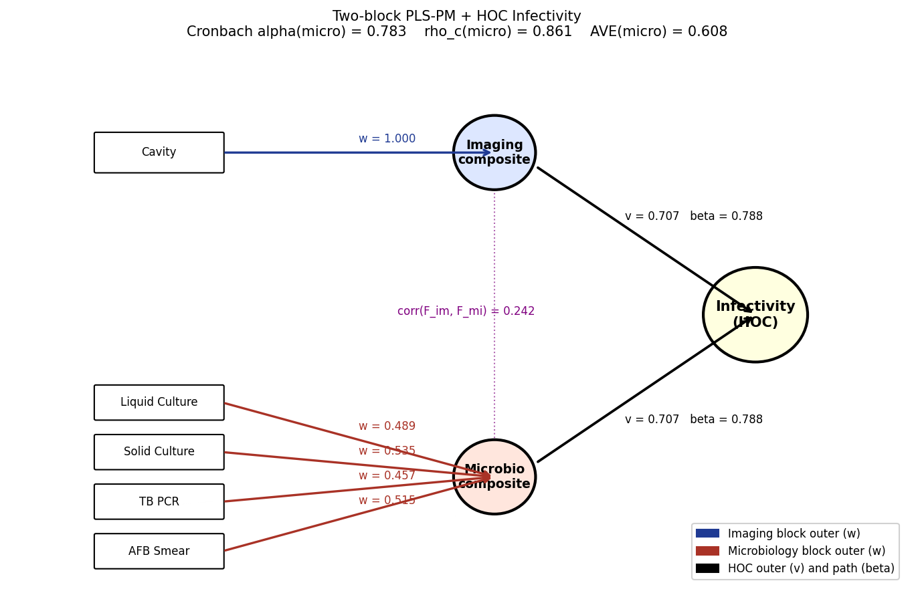

Compares three branches: polychoric (threshold-model CFA), tetrachoric (binary DWLS CFA), and PLS-PM (two-block composite + HOC). Cavity vs four sputum tests are modelled as Imaging vs Microbiology blocks where applicable.
n polychoric = 459 | n tetrachoric = 459 | n PLS = 459
| Indicator | P(=1) |
|---|---|
| Cavity | 0.318 |
| AFB_Smear | 0.440 |
| TB_PCR | 0.553 |
| Solid_Culture | 0.562 |
| Liquid_Culture | 0.708 |
Indicator-level "relative influence" (Cavity 14% / Micro 86%) is biased by indicator counts (1 vs 4). At the construct / block level, both methods agree the two blocks contribute symmetrically to Infectivity.
| Block | rjY | βj (multivariate) | β·r contribution | share of R2 |
|---|---|---|---|---|
| Imaging (Cavity) | 0.7881 | 0.6345 | 0.5000 | 50.00% |
| Microbiology | 0.7881 | 0.6345 | 0.5000 | 50.00% |
| R2(Finfectivity) = | 1.0000 | · | ||
Inter-block correlation ρ(Fim, Fmi) = 0.242.
| Weighting | γImaging | γMicro | share Imaging | share Micro |
|---|---|---|---|---|
| Naive (sqrt(φ), Schmid-Leiman) | 0.8058 | 0.8058 | 50.00% | 50.00% |
| ρc-weighted (eff = γ·sqrt(ρc)) | 0.8058 | 0.7475 | 51.87% | 48.13% |
| AVE-weighted (eff = γ·sqrt(AVE)) | 0.8058 | 0.6282 | 56.19% | 43.81% |
φ(F1, F2) = 0.6493. Naive form follows Schmid-Leiman just-identification with γ1=γ2=sqrt(φ). Reliability- and AVE-weighted forms downweight the four-indicator Microbiology block because its ρc/AVE are below 1 while the single-item Imaging block is taken at 1.0.
| Indicator | 1F ULS share | 2F HOC share |
|---|---|---|
| Cavity | 0.0991 | 0.1448 |
| AFB_Smear | 0.2424 | 0.2301 |
| TB_PCR | 0.1985 | 0.1885 |
| Solid_Culture | 0.2412 | 0.2290 |
| Liquid_Culture | 0.2187 | 0.2076 |
phi(F1,F2) = 0.6505 SRMR = 0.0846
| Indicator | HOC DWLS share |
|---|---|
| Solid_Culture | 0.2337 |
| Liquid_Culture | 0.2190 |
| AFB_Smear | 0.2185 |
| TB_PCR | 0.1867 |
| Cavity | 0.1421 |
v_imaging=+0.707 v_micro=+0.707 beta_im=+0.788 beta_micro=+0.788
| Indicator | w_eff | variance share |
|---|---|---|
| Cavity | +0.7071 | 0.5000 |
| Solid_Culture | +0.3786 | 0.1433 |
| AFB_Smear | +0.3643 | 0.1327 |
| Liquid_Culture | +0.3459 | 0.1197 |
| TB_PCR | +0.3229 | 0.1043 |






=== Infectivity latent — POLYCHORIC branch ===
n = 459
1) Correlation comparison (off-diagonal magnitudes):
mean |Pearson r| = 0.3610
mean |Polychoric r| = 0.5457
(Polychoric removes the binary-truncation bias of Pearson; expect larger magnitudes for unbalanced indicators such as Cavity.)
2) One-factor ULS on POLYCHORIC R
indicator loading_F communality abs_loading relative_influence
AFB_Smear 0.902841 0.815122 0.902841 0.242435
Solid_Culture 0.898294 0.806932 0.898294 0.241214
Liquid_Culture 0.814619 0.663604 0.814619 0.218746
TB_PCR 0.739365 0.546660 0.739365 0.198538
Cavity 0.368930 0.136109 0.368930 0.099067
SRMR(off-diag) = 0.0779 mean h^2 = 0.5937
3) Two-factor constrained CFA (F1=Cavity ; F2=AFB/PCR/Solid/Liquid) on POLYCHORIC R
indicator loading_F1_Imaging loading_F2_Microbio schmid_leiman_general abs_general relative_influence_HOC
Cavity 0.56822 0.000000 0.457857 0.457857 0.144831
AFB_Smear 0.00000 0.902841 0.727487 0.727487 0.230121
TB_PCR 0.00000 0.739365 0.595762 0.595762 0.188453
Solid_Culture 0.00000 0.898294 0.723823 0.723823 0.228962
Liquid_Culture 0.00000 0.814619 0.656400 0.656400 0.207634
phi(F1,F2) = 0.6493
SRMR(off-diag) = 0.0779
ULS objective = 0.060659
Schmid-Leiman general loadings rescale each indicator onto a single
higher-order Infectivity dimension (g_i = lambda_i * sqrt(phi) for phi>0).
Relative influence on HOC Infectivity (sums to 1):
AFB_Smear 0.2301
Solid_Culture 0.2290
Liquid_Culture 0.2076
TB_PCR 0.1885
Cavity 0.1448
=== Infectivity latent — TETRACHORIC branch ===
n = 459
Marginal prevalence P(item = 1):
Cavity 0.3181
AFB_Smear 0.4401
TB_PCR 0.5534
Solid_Culture 0.5621
Liquid_Culture 0.7081
Mean off-diagonal correlations:
Pearson (phi-coef) = 0.3610
Tetrachoric = 0.5457
1-factor results:
ULS loadings = [0.3689, 0.9028, 0.7394, 0.8983, 0.8146] SRMR = 0.0779
DWLS loadings = [0.3686, 0.8714, 0.7446, 0.9317, 0.8732] SRMR = 0.0846 wSRMR = 0.0759
2-factor constrained (F1 = Cavity ; F2 = AFB/PCR/Solid/Liquid):
ULS phi = 0.6493 SRMR = 0.0779
DWLS phi = 0.6505 SRMR = 0.0846 wSRMR = 0.0759
Schmid-Leiman HOC general loadings (DWLS):
Solid_Culture g = +0.7514 share = 0.2337
Liquid_Culture g = +0.7043 share = 0.2190
AFB_Smear g = +0.7028 share = 0.2185
TB_PCR g = +0.6005 share = 0.1867
Cavity g = +0.4570 share = 0.1421
=== Infectivity composite — PLS-PM branch (two blocks + HOC) ===
n = 459
Block 1 (Imaging) indicators: Cavity
Block 2 (Microbiology) indicators: AFB_Smear, TB_PCR, Solid_Culture, Liquid_Culture
Outer weights (Mode A, NIPALS converged):
Imaging : Cavity w = 1.0000 (trivial — single indicator)
Microbiology:
AFB_Smear w = +0.5152 loading = +0.8034
TB_PCR w = +0.4567 loading = +0.7121
Solid_Culture w = +0.5354 loading = +0.8348
Liquid_Culture w = +0.4892 loading = +0.7629
Inter-block correlation corr(F_imaging, F_micro) = +0.2421
Higher-order Infectivity composite (PC1 of block scores):
v_imaging = +0.7071 beta(Imaging -> Inf) = +0.7881
v_micro = +0.7071 beta(Microbio -> Inf) = +0.7881
Effective per-indicator weights on Infectivity composite:
Cavity w_eff = +0.7071 share = 0.5000 95% CI [+0.7071, +0.7071]
Solid_Culture w_eff = +0.3786 share = 0.1433 95% CI [+0.3654, +0.3919]
AFB_Smear w_eff = +0.3643 share = 0.1327 95% CI [+0.3525, +0.3753]
Liquid_Culture w_eff = +0.3459 share = 0.1197 95% CI [+0.3294, +0.3614]
TB_PCR w_eff = +0.3229 share = 0.1043 95% CI [+0.2991, +0.3419]
Reliability:
Imaging block : alpha = nan rho_c = nan AVE = 1.0
Microbiology : alpha = 0.7835 rho_c = 0.8607 AVE = 0.6079
Fornell-Larcker discriminant validity:
sqrt(AVE_micro) = 0.7796 vs |corr(F_im, F_mi)| = 0.2421 PASS